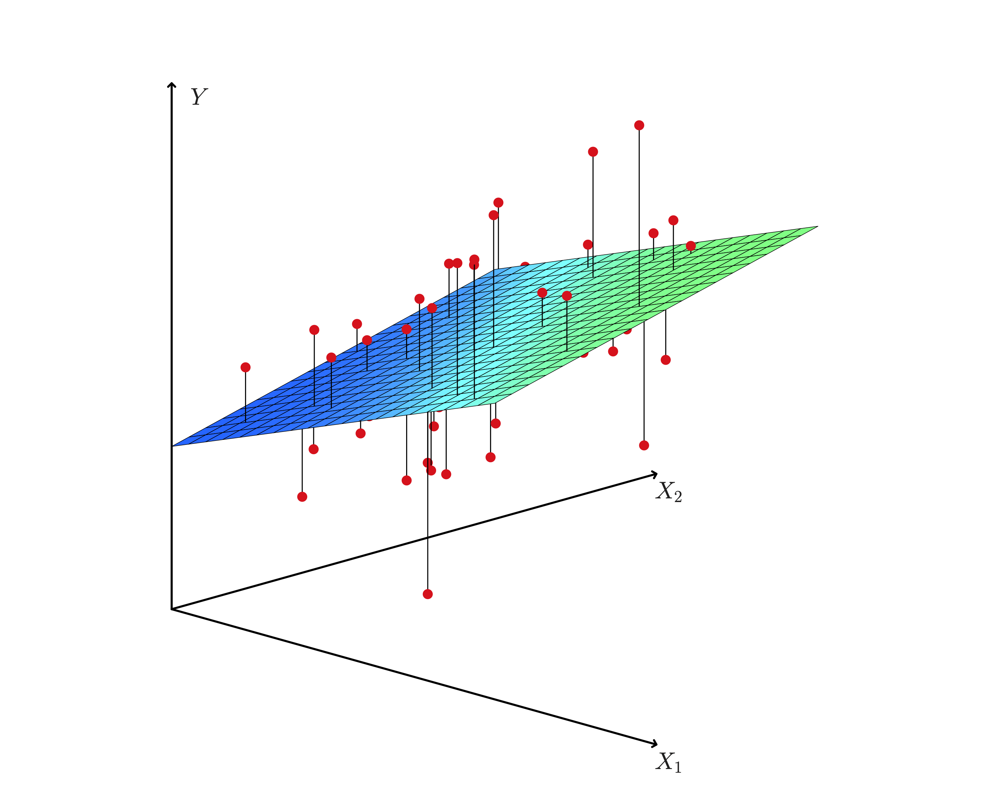
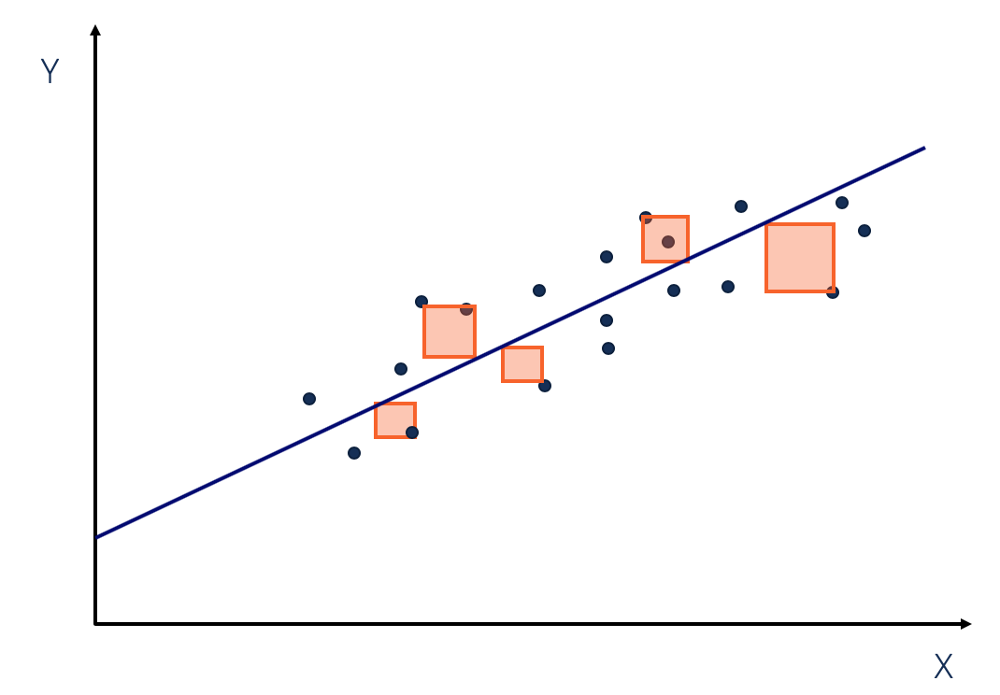
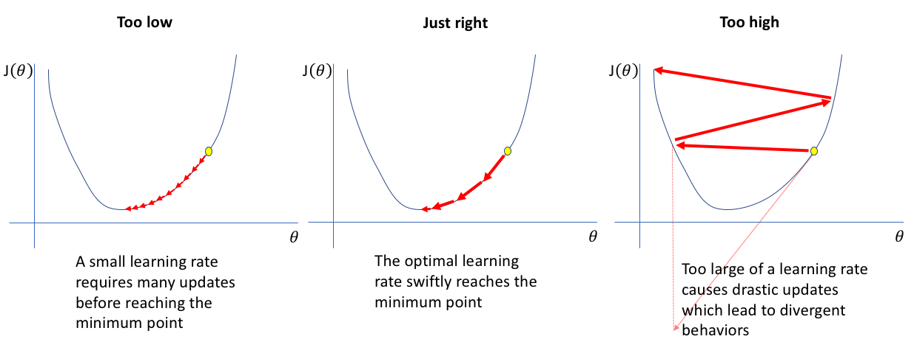
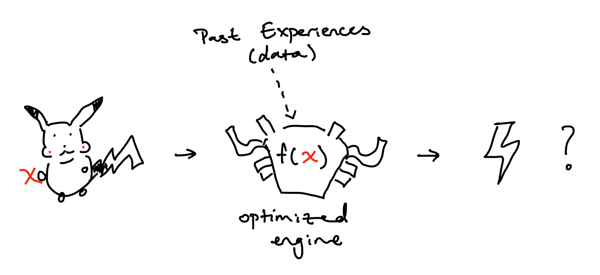

Pikachu is walking outside and suddenly sees an ominous cloud approaching. Soon, the cloud catches up to Pikachu and a bolt of lightning strikes him. That felt bad. Pikachu goes home and does research. Pikachu gathers data on all the factors he thins causes lightning strikes. High humidity? Definitely part of the equation. Type of material Pikachu was standing on? Maybe. Day of the week? Probably not. To make these assumptions, he used previous data and optimized the weights of his model to get: $$ \text{lightning strike} = 0.7 \cdot \text{humidity} + 0.25 \cdot \text{ground material} + 0.05 \cdot \text{day} $$ Pikachu just came up with a linear regression model to predict the odds of a lightning strike.
For simplicity, I will be refering to hyperplanes as "lines" and categorizing them with lines.
That's it...
Remember when you were supposed to find the slope (m) and y intercept (b) based on some x, y coordinates in middle school? This is no different. In middle school, we used 2 points: x, y to find the m and b. Expect, interpolating between x, y means that we can find the exact line we want with 100% accuracy. In machine learning (and statistics), we might have multiple points so we can't find exactly where to place our line. Instead, we make the best estimate of where we think the line should be ($\hat{y}$). Oh yeah, in ML we use cool kid symbols to show we know what we are doing: $$ \begin{aligned} m &= \theta_1 \\ b &= \theta_0 \end{aligned} \qquad \Rightarrow \qquad \hat{y} = \theta_1 x + \theta_0 $$
Wow! But what are we doing here?
At the end of the day we still want an approximate line: $y = mx + b$. How do we get it? By adjusting our m's and b's of course! In ML, we combine m's and b's into $\theta$ (known as parameters or weights). We can then tune the $\theta_d$ values to make our line fit (or at least try to fit) our datapoints. This are now represented by: $$ \theta = \begin{bmatrix} \theta_0 \\ \theta_1 \\ \vdots \\ \theta_d \end{bmatrix}_{d + 1, 1} $$ Because we can have many datapoints, lets rewrite x, y with fancy math notation: $$ y = \begin{bmatrix} y_0 \\ y_1 \\ \vdots \\ y_n \end{bmatrix}_{n, 1} \hat{y} = \begin{bmatrix} \hat{y}_0 \\ \hat{y}_1 \\ \vdots \\ \hat{y}_n \end{bmatrix}_{n, 1} \quad X = \begin{bmatrix} x_0^T \\ x_1^T \\ \vdots \\ x_n \end{bmatrix}_{n, d + 1} \quad x_i = \begin{bmatrix} x_{i0} \\ x_{i1} \\ \vdots \\ x_{id} \end{bmatrix} = \begin{bmatrix} f_0(x) \\ f_1(x) \\ \vdots \\ f_d(x) \\ \end{bmatrix}_{1, \ d + 1} \quad \text{where } x_{i0} = 1 $$ $$ \Rightarrow \hat{y}_i = \theta^T_i x_i = x^T_i \theta_i \\ \Rightarrow \hat{y} = X \theta $$
$x_{id}$ can be from an arbitrary function of $x$ (polynomial regression). For example, $x_{i3} = f(x) = x^3$
The dimension of $X$ is ($n, \ d + 1$):
Because we have datapoints (x, y) that are labeled, we can categorize linear regression as supervised machine learning.
We have: datapoints (y, x)
We want: optimized $\theta$ values for best line through datapoints
The most common method is the Least Squares Method. It minimizes the sqaured difference between the actual y value and our predicted $\hat{y}$ for all our points. The difference is known as the residual which represents our error. We square our residual for a multitude of reasons. It makes residuals positive and punishes large residuals to name a few. In other words, we are minimizing the sum of squared errors (SSE): $$ SSE = \sum_i^n (y_i - \hat{y_i})^2 \quad \text{for all points, sum the sqaured errors} $$ $$ \text{Least Squares} = \min (SSE) = \min \sum_i^n (y_i - \hat{y_i})^2 $$

$$ \begin{aligned} L(\theta) &= \min (MSE) = \min \frac{1}{n} \sum_i^n (y_i - \hat{y}_i)^2 \\ &= \min \frac{1}{n} (y - X \theta)^T (y - X \theta) \qquad \text{from squared term} \\ &= \min \frac{1}{n} (y^T - \theta^T X^T) (y - X \theta) \\ &= \min \frac{1}{n} (y^T y - y^T X \theta - \theta^T X^T y + \theta^T X^T X \theta) \\ &= \min \frac{1}{n} (y^T y - 2\theta^T X^T y + \theta^T X^T X \theta) \qquad \text{$y^T X \theta$ is a scalar so it equals its transpose} \\ \nabla L(\theta) &= 0 \\ 0 &= \frac{1}{n} (-2 X^T y + 2 X^T X \theta) \\ 0 &= (-2 X^T y + 2 X^T X \theta) \qquad \text{$\frac{1}{n}$ dropped, making MSE = Least Squares} \\ 2 X^T y &= 2 X^T X \theta \\ X^T y &= X^T X \theta \\ \theta &= (X^T X)^{-1} (X^T)y \end{aligned} $$
So the theta that minimizes our objective function is found at $\theta = (X^T X)^{-1} (X^T)y$. If we solve this, we should get the best $\theta$ values that estimates where we should place our line.
Notice the inverse term: $(X^T X)^{-1}$. Solving that is hard ... especially for computers. It might take too long if $X$ is large. We want a fast way to approximate $\theta$. Thats where we use gradient descent.
Gradient descent iteratively approximates the minimum which is more computer friendly (think for / while loop). Intuitively, it does this by dropping a ball down a hole. As the ball approaches the bottom, the rate of change at which is descends approaches 0.

$$ \theta = \theta - \alpha \nabla L(\theta) \qquad \text{$\alpha$ is the learning / descending rate (hyperparameter *)} $$
Let's optimize from earlier but using gradient descent. This optimization is more like an approximation algorithm: $$ \begin{aligned} \text{While (True):} \\ \theta_{new} &= \theta_{old} - \alpha \nabla L(\theta) \\ &= \theta_{old} - \alpha \cdot \frac{1}{n} (-2 X^T y + 2 X^T X \theta) \qquad \text{from $\nabla L(\theta)$ earlier} \\ &= \theta_{old} - \frac{2 \alpha}{n} (X^T X \theta - X^T y) \\ & \ \text{if $(\theta_{new} - \theta_{old}) < \psi$ (some small value *):}\\ & \qquad \text{Break} \\ \theta_{old} &= \theta_{new} \end{aligned} $$ Upon breaking from the loop, we get our approximated $\theta$ value.

So how did Pikachu get his model? He optimized for $\theta$ using gradient descent or calculated it meticulously with the closed form method (there are even more methods not covered)! At the end of the day, by optimizing the parameters (or weights) $\theta$ using training (past) data, we got a best "line" which we can use to predict new points somewhat accurately. In doing so, we generated a interesting function, $f_\theta(x)$, that predicts something based on an underlying linear regression engine.
$$ x \rightarrow f_\theta(x) = \hat{y} $$
